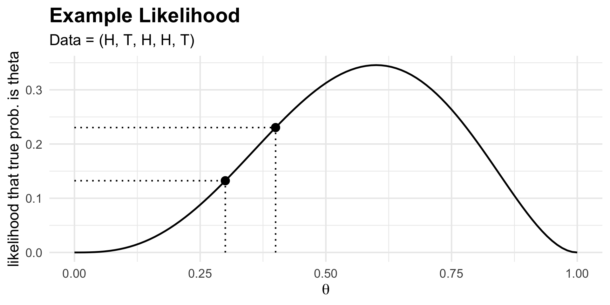

PSTAT 120B: Mathematical Statistics
Ethan’s Week 7 Discussion Section
Department of Statistics and Applied Probability; UCSB
February 18, 2026
\[ \newcommand\R{\mathbb{R}} \newcommand{\N}{\mathbb{N}} \newcommand{\E}{\mathbb{E}} \newcommand{\S}{\mathbb{S}} \newcommand{\Prob}{\mathbb{P}} \newcommand{\F}{\mathcal{F}} \newcommand{\1}{1\!\!1} \newcommand{\comp}[1]{#1^{\complement}} \newcommand{\Var}{\mathrm{Var}} \newcommand{\SD}{\mathrm{SD}} \newcommand{\vect}[1]{\vec{\boldsymbol{#1}}} \newcommand{\tvect}[1]{\vec{\boldsymbol{#1}}^{\mathsf{T}}} \newcommand{\hvect}[1]{\widehat{\boldsymbol{#1}}} \newcommand{\mat}[1]{\mathbf{#1}} \newcommand{\tmat}[1]{\mathbf{#1}^{\mathsf{T}}} \newcommand{\Cov}{\mathrm{Cov}} \DeclareMathOperator*{\argmin}{\mathrm{arg} \ \min} \newcommand{\iid}{\stackrel{\mathrm{i.i.d.}}{\sim}} \newcommand{\probto}{\stackrel{\mathrm{p}}{\longrightarrow}} \newcommand{\distto}{\stackrel{\mathrm{d}}{\longrightarrow}} \newcommand{\mseto}{\stackrel{\mathrm{m.s.}}{\longrightarrow}} \newcommand{\Lik}{\mathcal{L}} \DeclareMathOperator*{\argmax}{\text{arg }\max} \]
Statistical Inference
General Framework
We have a population, governed by a set of population parameters that are unobserved (but that we’d like to make claims about).
To make claims about the population parameters, we take a sample.
We then use our sample to make inferences (i.e. claims) about the population parameters.

- In estimation, we seek to construct estimators to estimate population parameters.
Likelihoods
A coin lands “heads” with probability \(\theta \in (0, 1)\).
Suppose we toss the coin five times, and observe (
H,T,H,H,T).- Letting X denote the number of heads in 5 tosses, X ~ Bin(5, \(\theta\))
If \(\theta = 0.3\), how likely were we to have observed what we saw?
- If \(\theta = 0.3\), the probability of observing three heads is \(\Prob(X = 3) = \binom{5}{3}(0.3)^3(0.7)^2 \approx 0.1323\)
If \(\theta = 0.4\), how likely were we to have observed what we saw?
- If \(\theta = 0.3\), the probability of observing three heads is \(\Prob(X = 3) = \binom{5}{3}(0.4)^3(0.6)^2 \approx 0.2304\)
Given that we observed (
H,T,H,H,T), which was more likely: that \(\theta = 0.3\) or that \(\theta = 0.4\)?
Likelihoods
Maximization
Idea:
To estimate a parameter \(\theta\) given data \(X_1, X_2, \cdots, X_n\), find the value of \(\theta\) that was most likely to have given rise to the data we observed.
This procedure is called maximum likelihood estimation and the resulting estimator is called the maximum likelihood estimator
The likelihood gives a way of answering the question: “given data \(X_1, X_2, \cdots, X_n\), how likely was it that the true value of the parameter were \(\theta\), for an arbitrary \(\theta\)?”
For example, back to our coin-tossing example:
Likelihoods
Example
Likelihoods
Example: Different Datasets

Likelihoods
Definition
The likelihood given a sample is just the marginal mass/density function.
Indeed, the reason we call this a “likelihood” function instead of a “probability” function is because, in the continuous case, the likelihood at a given point doesn’t really represent a true probability (but, it is giving the same sort of information as a probability).
\[ \mathcal{L}(\theta; x_1, x_2, \cdots, x_n) := f_{X_1, X_2, \cdots, X_n}(x_1, x_2, \cdots, x_n; \theta) \]
- If the sample is i.i.d.: \(\displaystyle \mathcal{L}(\theta; x_1, x_2, \cdots, x_n) = \prod_{i=1}^{n} f(x_i; \theta)\)
Likelihoods
Continuous Example: Exponential
Example Scenario: The wait time at The Arbor of a randomly-selected customer follows an Exponential distribution with unknown mean \(\theta\).
Likelihood (assuming i.i.d.): \[\begin{align*} \class{fragment}{{} \mathcal{L}(\theta; x_1, x_2, \cdots, x_n)} &\class{fragment}{{} = \prod_{i=1}^{n} f(x_i; \theta)} \\[3px] &\class{fragment}{{} = \prod_{i=1}^{n} \left[ \frac{1}{\theta} e^{-Y_i/\theta} \cdot 1 \! \! 1_{\{x_i \geq 0\}} \right] } \\[3px] &\class{fragment}{{} = \left( \frac{1}{\theta} \right)^n \cdot e^{-\frac{1}{\theta} \sum_{i=1}^{n} x_i} \cdot 1 \! \! 1_{\{x_{(1)} \geq 0\}}} \end{align*}\]
Likelihoods
Continuous Example: Exponential
\[ \mathcal{L}(\theta; x_1, x_2, \cdots, x_n) = \left( \frac{1}{\theta} \right)^n \cdot e^{-\frac{1}{\theta} \sum_{i=1}^{n} x_i} \cdot 1 \! \! 1_{\{x_{(1)} \geq 0\}} \]
- Note that we are viewing this as a function of \(\theta\)!
- The idea is: we assume that we already have our data \((x_1, x_2, \cdots, x_n)\); what we’re trying to do is figure out the \(\theta\) value that makes the data we observed most plausible.
- Further note: this shows that likelihoods aren’t true density functions in \(\theta\).
- Indeed, \(\displaystyle \int_{0}^{\infty} \left( \frac{1}{\theta} \right)^n \cdot e^{-\frac{1}{\theta} \sum_{i=1}^{n} x_i} \ \mathrm{d}\theta = \frac{(n - 2)!}{(\sum_{i=1}^{n} x_i)^{n - 1}} \neq 1\)
Likelihoods
Continuous Example: Exponential

Maximum Likelihood Estimators
General Procedure
Definition: Maximum Likelihood Estimator
\[ (\widehat{\theta}_{1, \mathrm{MLE}}, \ \cdots, \ \widehat{\theta}_{m, \mathrm{MLE}}) := \argmax_{(\theta_1, \cdots, \theta_m)} \Lik(\theta_1, \cdots, \theta_m; X_1, X_2, \cdots, X_n) \]
- Procedurally, we often work with the log-likelihood instead. That is:
- Find the likelihood
- Take the logarithm to find the log-likelihood
- Find the minimizing value of the log-likelihood
Maximum Likelihood Estimators
Example
Let \(X_1, X_2, \cdots, X_n \iid f(x; \theta) = \frac{x}{\theta} \exp\left\{ - \frac{x^2}{2 \theta} \right\}\)
\[\begin{align*} \class{fragment}{{} \mathcal{L}(\theta; X_1, \cdots, X_n)} &\class{fragment}{{} = \prod_{i=1}^{n} f(X_i; \theta)} \class{fragment}{{} = \prod_{i=1}^{n} \left[ \frac{X_i}{\theta} \cdot \exp\left\{ - \frac{X_i^2}{2\theta} \right\} \right] } \\[3px] &\class{fragment}{{} = \left( \frac{1}{\theta} \right)^n \cdot \left( \prod_{i=1}^{n} X_i \right) \cdot \exp\left\{ - \frac{1}{2\theta} \sum_{i=1}^{n} X_i^2 \right\} } \\[3px] \class{fragment}{{} \ell(\theta; X_1, \cdots, X_n)} &\class{fragment}{{} := \ln \mathcal{L}(\theta; X_1, \cdots, X_n) } \class{fragment}{{} = -n\ln(\theta) + \sum_{i=1}^{n} \ln(X_i) - \frac{1}{2 \theta} \sum_{i=1}^{n} X_i^2 } \\[3px] \class{fragment}{{} \frac{\partial}{\partial \theta} \ell(\theta; X_1, \cdots, X_n)} &\class{fragment}{{} = - \frac{n}{\theta} + \frac{1}{2 \theta^2} \sum_{i=1}^{n} X_i^2 } \end{align*}\]
Maximum Likelihood Estimators
Example
Let \(X_1, X_2, \cdots, X_n \iid f(x; \theta) = \frac{x}{\theta} \exp\left\{ - \frac{x^2}{2 \theta} \right\}\)
\[ \frac{\partial}{\partial \theta} \ell(\theta; X_1, \cdots, X_n) = - \frac{n}{\theta} + \frac{1}{2 \theta^2} \sum_{i=1}^{n} X_i^2 \]
- Thus, \(\widehat{\theta}_{\mathrm{MLE}}\) must satisfy
\[ - \frac{n}{\widehat{\theta}_{\mathrm{MLE}} } + \frac{1}{2 \widehat{\theta}_{\mathrm{MLE}}^2} \sum_{i=1}^{n} X_i^2 \stackrel{\mathrm{set}}{=} 0 \]
When solved for \(\widehat{\theta}_{\mathrm{MLE}}\), we find \(\boxed{\widehat{\theta}_{\mathrm{MLE}} = \frac{1}{2n} \sum_{i=1}^{n} X_i^2 }\)
Technically, we should also check that the second derivative at this point is negative, to ensure we found a maximum; I leave this as an exercise
Maximum Likelihood Estimators
Invariance Property
Invariance Property of the MLE
If \(\widehat{\theta}_1, \cdots, \widehat{\theta}_m\) are the maximum likelihood estimators for \(\theta_1, \cdots, \theta_m\), then the maximum likelihood estimator for \(h(\theta_1, \cdots, \theta_m)\) is \[ h(\widehat{\theta}_1, \cdots, \widehat{\theta}_m) \]
- Example: If \(X_1, \cdots, X_n \iid \mathrm{Expo}(\lambda)\), then \(\widehat{\lambda}_{\mathrm{MLE}} = 1 / \bar{X}\) (as shown in lecture).
- Say we seek the maximum likelihood estimator for the population variance, \(\lambda^2\).
- By invariance, this is given by \(1/(\bar{X}^2)\).

PSTAT 120B - Winter 2026 with Dr. Annie Qu; material © Ethan P. Marzban